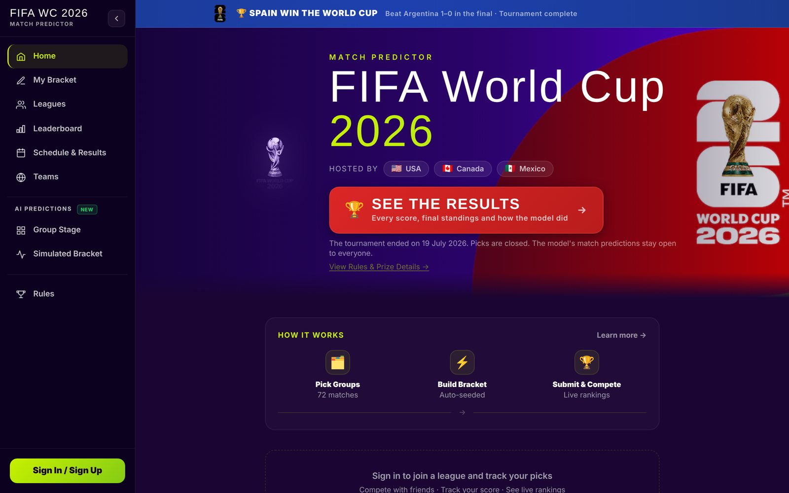
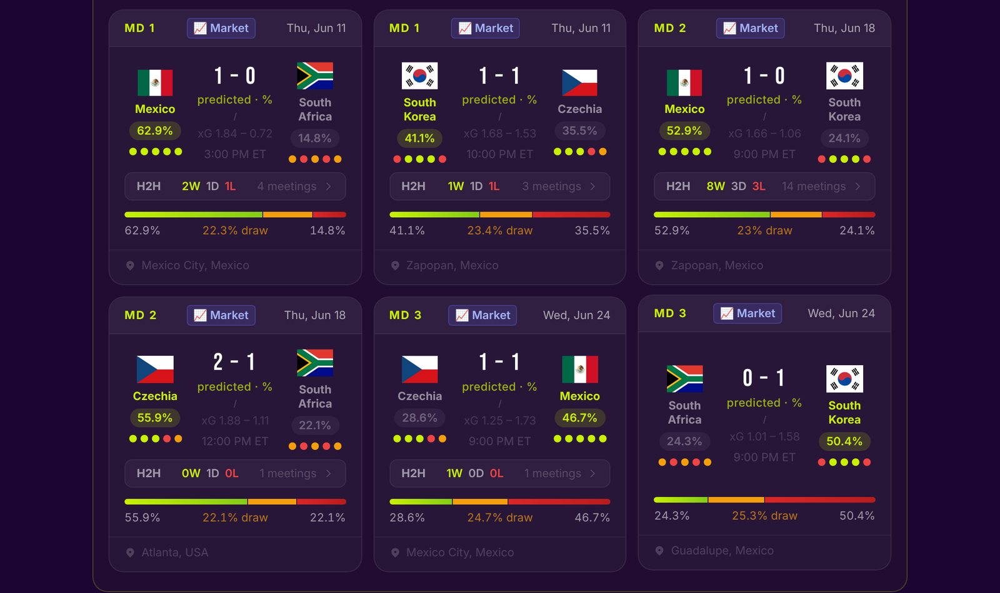
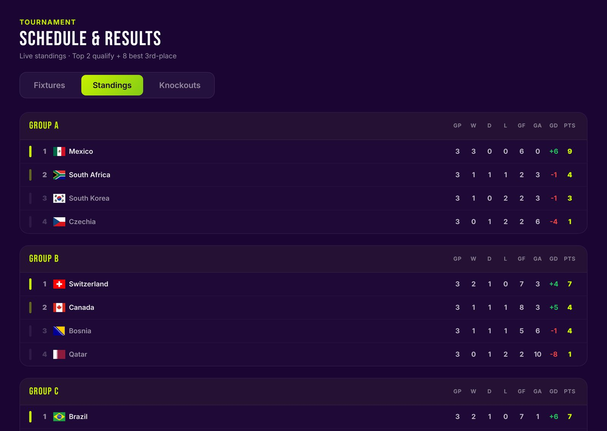
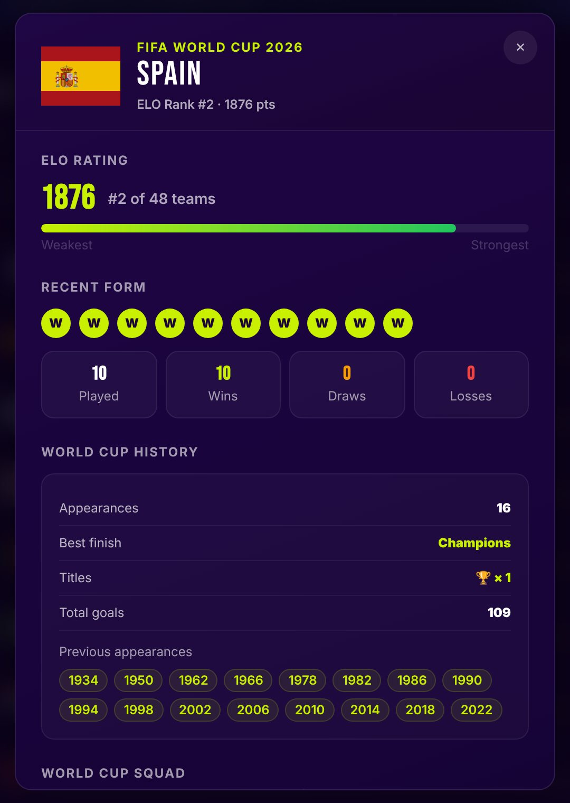
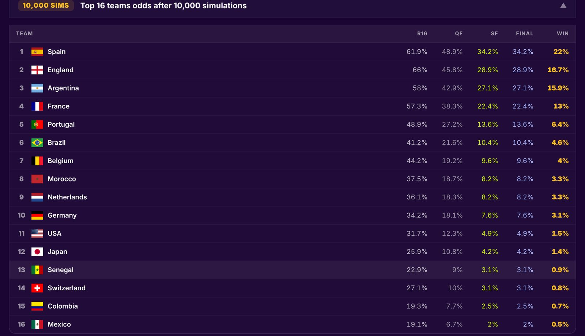
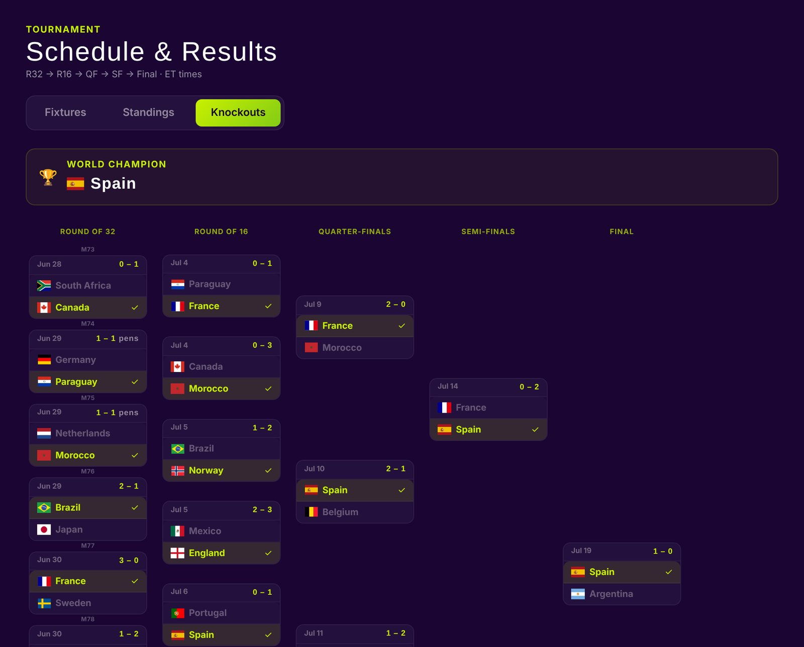

World Cup 2026 Predictor
A prediction game for the 2026 FIFA World Cup. A trained model forecast all 104 matches, players made their own picks, and private leagues competed on a live leaderboard.
Team Mark Hanna and Karim Assaad, 50/50
Timeline May to July 2026
Stack React, Supabase, Python
Goal Forecast all 104 matches of the first 48-team World Cup and let players compete on their own picks.
My role Co-built 50/50 with Karim Assaad.
Result 120+ players across 8 leagues. The model's pre-tournament favourite, Spain, won the title.
120+ players
8 leagues
104 matches forecast
10,000 simulated tournaments

The home page in its post-tournament state. The banner reports the final, and the main button leads to every result.
What it does
Every fixture shows the model's forecast: win, draw and loss chances, expected goals and the most likely scoreline. Players sign in, pick each match with an optional confidence multiplier, build a knockout bracket, and compare scores with friends in public or private leagues.

Group A forecasts. Each card shows the predicted score, expected goals (xG), head-to-head record and a three-way probability bar. A "Market" badge marks matches blended with betting-market odds.

Live group tables, built from final scores in the database.

Team profiles combine ELO rating, recent form and World Cup history.
The prediction model
Each forecast runs in the browser from data files built ahead of time, so the model costs nothing to serve. Five steps turn team data into a full scoreline distribution.
Features ELO gap, form, head-to-head, attack and defence Logistic regression Win probability Market blend 45% model, 55% Polymarket Draw estimate From each team's draw rate Poisson scorelines xG and top scores
The market blend applies only where Polymarket had odds, which excludes every knockout match.
Model features and learned weights
Feature What it measures Weight
elo_diff Difference in ELO rating, per 100 points 0.716 form_diff Difference in weighted recent form −1.875 h2h_centered Head-to-head win rate, centred on 0.5 0.110 atk_diff Difference in rolling goals scored 0.148 def_diff Difference in rolling goals conceded 0.382 intercept Home advantage baseline 0.404
Weights from scripts/train_model.py, applied to standardized features. Trained on 2,448 decisive internationals since 2000 between World Cup nations.
Model parameters
Parameter Value
Training samples 2,448 matches 5-fold cross-validated accuracy 68.6% Market weight when odds exist 0.55 Squad-strength weight (fixed) 0.20 Draw probability range 8% to 36% Monte Carlo runs 10,000
Tournament simulation
The simulator plays the whole tournament 10,000 times: group tables, the eight best third-placed teams, then the Round of 32 through the final, sampling every match from the same scoreline model. Counting how often each team reaches each round gives its odds.

The simulated-bracket view. Odds shown come from the latest model run.
Pre-tournament favourites against the real result
Team Title odds Actual finish
Spain 18.4% Champion France 13.8% Fourth place England 13.2% Third place Morocco 9.1% Quarter-final Argentina 8.2% Runner-up Brazil 6.5% Round of 16 Portugal 5.4% Round of 16 Netherlands 4.9% Round of 32
Title odds from the 10,000-run simulation saved on 27 May 2026, two weeks before kickoff. The model's favourite won, and all four semi-finalists came from its top five.
How the forecasts held up
A script froze each prediction before kickoff so nothing was graded with hindsight. Predictions frozen from 19 June onward give the cleanest test; earlier matches were back-filled after the fact.
Group-stage matches Correct result Accuracy
Frozen before kickoff (19 June onward) 29 of 43 67.4% All 72, including back-filled 47 of 72 65.3%
A pick counts as correct when the model's most likely outcome matched the result. The model never ranks a draw first, so all 20 group-stage draws count as misses.

The completed knockout bracket. Ties decided on penalties show "pens" next to the score.
Architecture
Two paths feed the app. A scheduled pipeline rebuilds the model's data files and redeploys the site. A database function pulls live scores every minute during matches and pushes them to every open browser.
Static model data travels the top path. Live scores, picks and leagues travel the bottom path through Supabase.
Layer Tools
Frontend React 19, Vite, Tailwind CSS Backend Supabase Postgres with row-level security, Auth, Realtime, Edge Functions, pg_cron Model Python, scikit-learn, NumPy Data FotMob, Polymarket, Kaggle international results Quality Vitest unit tests, GitHub Actions CI, Dependabot
What I'd do next
Draws are the clearest gap. The model never ranks a draw as the most likely outcome, and the group stage produced 20 of them. A dedicated draw model, or a three-way classifier instead of win-or-loss, would be the first change.
After the tournament, a data audit found the live feed had filed several knockout scores under the wrong match numbers. Rebuilding those results, cross-checked against two independent sources, also added proper support for penalty shootouts.
Previous project Assignment TrackerNext project Hem